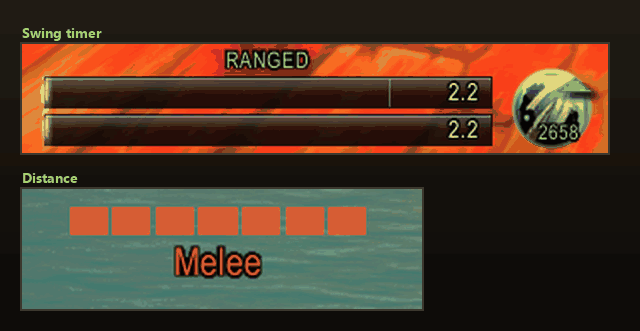
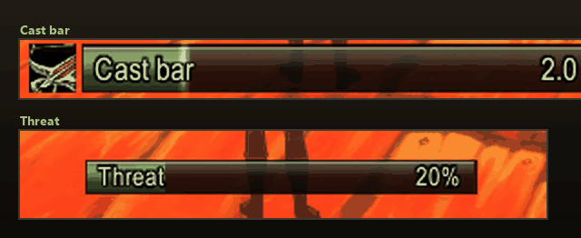
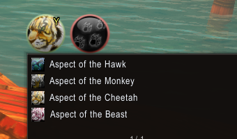
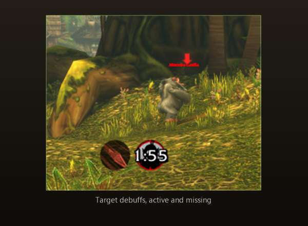
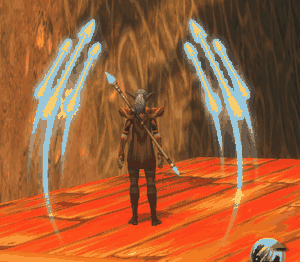
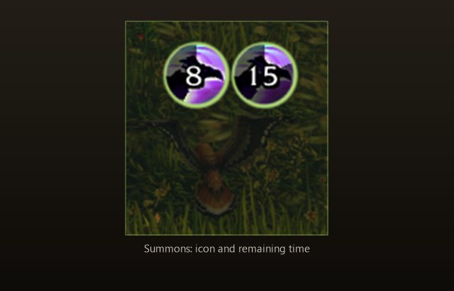
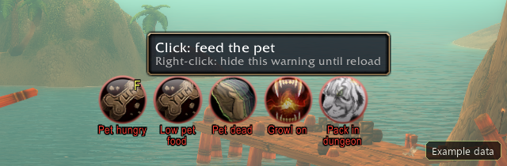
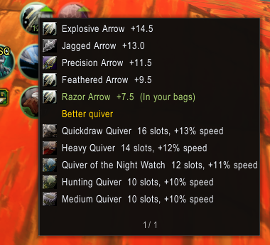
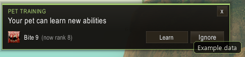
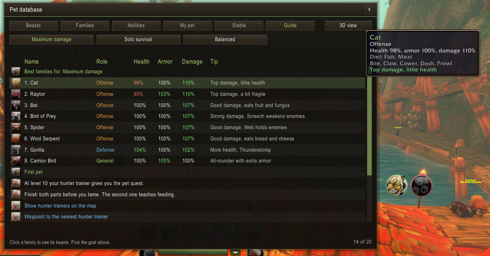

New in 1.2.0
Aspect and tracking buttons, smarter pet warnings and ammo with upgrade suggestions.
Aspect and tracking
New module: one button and key each, toggle between two spells, Shift, Ctrl and Alt variants.
Pet warnings with a click
Hungry: click feeds. Hurt: click mends. Dead: click revives. Low food can be dismissed.
Smarter feeding
Own feed key, a warning when food runs low, buff food is no longer picked automatically.
Pack warning
Aspect of the Pack in a dungeon or raid is flagged, one click switches to your preferred aspect.
Ammo upgrades
A green arrow shows better ammo, quivers and ammo pouches for your level. Quest and PvP rewards included.
What's New window
After each update a one-time summary appears. Open it any time with /hht news.
Everything at a glance
25 modules you switch on one by one. Whatever you do not need stays off.
Swing timer
Auto Shot and melee bars with range state.
Distance
Target distance in bands, melee and dead zone.
Cast bar
Player cast bar with icon, name and time.
Threat
Threat meter and aggro warning.
Warnings
Icons for missing aspect, Trueshot Aura, Hunter's Mark; pet missing, dead, hurt or hungry, low food. Click to revive, mend or feed.
Aspect and tracking
One button and key each for aspect and tracking, toggle between two spells, Shift, Ctrl and Alt variants.
Cooldowns
Cooldown icons for your hunter spells.
Target debuffs
Serpent Sting and your other debuffs on the target with timer, also in combat.
Proc overlay
Big art around your character for procs and buffs, with the remaining time as a fade.
Summons
Active summons such as Summon Hawk with their remaining time, also in combat.
Ammo
Arrow and bullet counter with low ammo warning, dungeon reminder and upgrades for ammo, quivers and pouches.
Pet feeder
Click or key to feed your pet, warnings for hunger and low food. Per-pet food choice and blacklist.
Macros
Creates character macros for pet handling, shots, traps, aspects and more.
Tranq rotation
Rotation and cooldowns of every hunter in the raid, with a notice when it is your turn.
Pet status
Pet portrait, health bar and happiness.
Pet database
Pet abilities, ranks, teaching beasts and map pins.
Beast watch
Tooltip info, rare and wishlist alerts, discovery tracking and a direction arrow.
Pet ability alerts
Popup when a beast nearby teaches a higher ability rank your pet can learn.
Pet training hint
Popup with a Learn button for ability ranks your pet can train now.
Pet guide
One-time popup at level 10 and a Guide tab in the pet database: the best pet for your goal, trainer on the map.
Stable masters
Stable masters on the world map and minimap from a built-in list; learns missing ones.
Food vendors
Vendors that sell food for your current pet on the world map and minimap.
Trainers
Hunter trainers and pet trainers together in one layer, waypoint to the nearest one.
Ammo vendors
Ammo vendors on the map and minimap, waypoint to the nearest one.
Map button
A button at the top left of the world map with switches for the layers.
Combat
Everything you want to see mid-fight, in view and still tidy.

Always know when the next shot lands
- Swing timer
- Auto Shot and main hand bars with label and remaining time
- Range state text: Melee, Ranged, Dead zone, Too far, each with its own colour
- Ranged bar turns red in the dead zone
- Fill or drain mode, spark, border, background opacity
- Width, height, spacing and every colour adjustable
- Distance
- Target distance in bands: melee, dead zone, near, middle, far, max range, out of range
- Three layouts: segments, badge or text only
- Pulse and sound when entering the dead zone
- Square or round icon, size, a colour for every band

Casts in view, aggro under control
- Cast bar
- Spell icon, name, remaining time and spark
- Tells casts and channels apart
- Can hide the default cast bar
- Width, height, border and background adjustable
- Threat
- Threat bar with label and percent
- Warns at a percentage you choose, before you pull aggro
- Alert when you gain aggro, sound and blink at high threat
- Only in a group or with pet; hide when there is no threat

Never forget your aspect again
- Warnings
- No aspect active, or not your preferred aspect
- Trueshot Aura missing
- Hunter's Mark missing: elites and bosses only, or every enemy
- Pet missing or dead, with the matching spell as icon; click to revive, the key shows on the icon
- Pet hurt (threshold adjustable): click casts Mend Pet; own warning when out of Mend Pet range
- Pet hungry: click feeds. Food low: tooltip with the count, right-click hides it, it returns when food drops below the limit again
- Growl on autocast: click switches it off. Aspect of the Pack in a dungeon or raid: click switches to your preferred aspect
- Show the active aspect, blink, sound, hide in combat
- Cooldowns
- Default: Rapid Fire, Bestial Wrath, Intimidation, Scatter Shot, traps, Feign Death, Deterrence and more; the list is freely editable
- All, only on cooldown or only ready; numbers, grey-out, spell names
- Action bar key shown on the icon
- Grow direction, icons per row, border and icon size

Aspect and tracking at one keypress
- One button and one key each for aspect and tracking
- Toggles between two spells you choose
- Shift, Ctrl and Alt pick other variants, for both the click and the key
- Right-click opens a list of every aspect or tracking type you know
- Tracking also covers Find Herbs, Find Minerals, Find Fish and Find Treasure; a small X turns it off
See debuffs, procs and summons, even mid-fight



- Target debuffs
- Serpent Sting and your other debuffs on the target with icon, timer and stacks, also in combat
- Tracked debuffs get a fixed slot and a red placeholder while they are missing
- Placeholder on all targets, elites and bosses, or bosses only; optionally blinking
- Only your debuffs or all, count, size and border adjustable
- Proc overlay
- Big art around your character while a proc or buff is active, also in combat
- Over 150 graphics to choose from in a paged gallery
- Remaining time as a fade: from the top, bottom, left or right
- Per proc: graphic, scale, offset X and Y, preview
- Quick Shots is pre-set; add any buff by spell ID yourself, up to 6
- Sound when it appears; read the ID with /hht auras
- Scan for new procs: short buffs gained out of combat are added to the list switched off
- Each proc has its own On/Off switch
- Summons
- Active summons such as Summon Hawk with icon and remaining time, also in combat
- The default UI shows them under the player frame; they are not buffs
- Icons close up without gaps and keep their order of arrival

Never out of arrows, never out of food
- Ammo
- Counts bags, quiver and the ammo slot, arrows and bullets separately
- Show the ammo your weapon needs, or all of it
- Low warning below a limit: red, blink, sound
- Reminder when entering a dungeon and on ready check
- Click: choose and equip other ammo; list of all ammunition
- Show ammo vendors on the map, waypoint to the nearest
- Green arrow when better ammo for your level is in your bags; click to see and equip the upgrades
- Also suggests better quivers (arrows) and ammo pouches (bullets) that match your equipped ammo, with the source: crafted, quest, drop or PvP reputation
- Engineer-crafted ammo can be switched on
- Pet feeder
- Click feeds, right-click picks the food, Shift-click blacklists; also works with its own key
- Warns when the pet gets unhappy (optional sound) and when food runs low
- Buff food is never picked automatically
- Food choice and blacklist per pet
- Always show, or only when the pet is not happy
- Keeps the HHT Feed macro up to date

One click and your pet is fit again
- Hungry: click feeds, the feed key shows on the icon
- Hurt: click casts Mend Pet
- Dead: click casts Revive Pet
- Food low: tooltip with the count, right-click hides it, and it comes back as soon as food drops below the limit again
- Aspect of the Pack in a dungeon: click switches to your aspect

Better ammo, better quivers, one glance
- A green arrow on the ammo counter shows that something better exists
- Quivers for arrows, ammo pouches for bullets, matching your weapon and level
- Shows the source: vendor, crafted, quest, drop or PvP reputation, including the new Forever quests
- Only items for your faction and level, items you already own are marked green
Pets
From taming to the stable: your companion and everything about beasts in one place.

Your companion, always in view
- Portrait with level, health bar with name
- Focus, experience and training points, loyalty
- Happiness indicator: happy, content, unhappy
- Pet abilities with cooldown and auto-cast ring
- Click the portrait to open the pet database
- Round or square, size and every bar adjustable
- Level on the portrait; experience, training points and loyalty switch on and off independently, loyalty can hide at max, bar spacing adjustable
- Frenzy indicator with adjustable icon size

What there is to know about every beast
- Six tabs: Beasts, Families, Abilities, My pet, Stable, Guide
- Guide tab: pick a goal (maximum damage, solo survival, balanced), get the best families with the beast to tame, a first-pet section with the hunter trainer on the map and a waypoint
- Families tab: diet, damage, health and armor modifier, family abilities and speed per pet family
- Over 600 beasts with spawns from Huntmaster, OneForAll and Questie
- Family, level, attack speed, zone and taught abilities per beast
- Search by name, family, zone or ability, plus filters
- Marks: tamed (+), wishlist (*), seen
- Attack speed is measured when you tame; a ~ marks the Classic base value
- 3D model preview
- Show on the map and set a waypoint
- Export and import beast data to share it

Never run past a rare beast again
- Beast watch
- Tooltip shows tameable info, family, level, speed and taught abilities
- Marks beasts as seen and, after taming, as tamed
- Popup for rare and wishlist beasts; also close to known spawns
- Buttons: target, map, arrow, wishlist, pause
- Direction arrow to the rare beast, adjustable size
- The popup shows family, level and zone, the family role with health, armor and damage modifiers, attack speed, diet, the abilities the beast teaches (ranks you can still learn in green) and the family abilities
- Optional 3D model of the beast in the popup
- Only beasts up to your level, sound, inside dungeons, repeat delay
- Pet ability alerts
- Popup when a nearby beast teaches a higher rank your pet can learn
- For the active pet only, or every pet you have used
- On entering a zone: a list of all beasts there that give a pet of yours an upgrade; click shows the beast on the map, right-click sets the arrow, Shift-click a waypoint, one button shows all on the map

New ranks for your pet, one click to learn
- Popup when your pet can learn ability ranks you already know
- A Learn button per ability trains the rank right away
- Abilities can be ignored; display time, sound, test hint and border colour adjustable

Which pet suits you, and where to get it
- One-time popup at level 10 with buttons for the trainer on the map, a waypoint and the guide
- Pick a goal: maximum damage, solo survival or balanced
- Basics of training and feeding, any time with /hht guide
Map
The places that matter on the world map, one click to a waypoint.

Find vendors, stable masters and trainers instantly
- Map button at the top left with switches for the layers
- Ammo vendor layer, by ammo kind and own faction only
- Stable master layer from a built-in list; missing ones are learned when you visit them
- Food vendor layer: only vendors that sell food for your current pet's diet; missing ones are learned when you open their merchant window
- Trainer layer: hunter trainers and pet trainers together in one category, own faction only if you like
- Waypoint to the nearest vendor, stable master, food vendor or trainer
- Active layers, beasts from the pet database and the rare the arrow points to also show on the minimap (on by default)
- Show beasts from the pet database on the map
- Every layer can be switched off on its own
Tools

18 ready-made macros, one drag to the bar
- 5 pet macros: one-button (revive, call or mend), call or dismiss, mend, revive, feed
- 13 hunter macros: attack, mark, aspect, trap, melee, feign, kite, growl, tame, track, burst, ammo, stable
- Shift and Ctrl pick variants, for example other aspects or traps
- Drag macros straight from the list onto your bar
- The feed macro stays in sync with the pet's food choice
- Tranq rotation: hunters of the group with cooldown, order and backup set by the raid leader, missed shots in red, a notice when you are next, test mode; plus an announcer for your own shot
Add your own, or let the addon learn it
- Enter it yourself
- Procs: add any buff by spell ID, even several IDs for one entry. Read the ID with /hht auras while the proc is active
- Target debuffs: add your own debuffs by spell ID, several ranks separated by commas
- Cooldowns: add spells from your spellbook, unknown spells stay hidden automatically, the default list can be restored
- Aspect and tracking keys: your own spells per key, plus Shift, Ctrl and Alt variants
- Feed key: Shift-click blacklists or allows a food per pet
- Learned automatically
- Procs: “Scan for new procs” adds short buffs you gain out of combat to the list switched off, then you switch them on
- Stable masters and food vendors: missing ones are learned as soon as you open their window. The built-in list stays the base
- Pet database: known ranks are read from Beast Training and the pet spellbook, “Scan now” starts it by hand
- Seen and tamed beasts are counted for you
- Everything learned can be forgotten again per module

No screen clutter: you decide what you see
- Every module has its own switch and its own page
- Own scale and opacity per module, plus global values for all
- Show always, in combat, with a target, or both
- All bar colours adjustable
- Icons per row for cooldowns, target debuffs, warnings and summons
- Colour themes (Bronze, Blue, Graphite), look of icons and bars (Flat, 3D frame, Glass), soft fade-in of windows, optional animations
- Collapsible sections, icons in the module list, text style per module
- Live preview: a module's page shows it with demo data so changes are visible at once. The window remembers its position
- Glass bar texture, smooth bar movement, flash when a cooldown is ready or a warning appears
- Unlock frames, move them with the mouse, lock again
- Unlock a single module right on its page; frames snap to each other while you move them (Shift = off)
- Flash glow strength and size, position of label and time per bar, ammo count and key binding position adjustable
- Reset positions or single modules
- Language: automatic, English or German
- Export and import all settings as one line of text
- Minimap button
- Module list on the left scrolls with the mouse wheel
Screenshots use sample data from the test mode, such as test beasts and frozen values. In the game you see your own data.
Install
In three steps
- Install via the CurseForge app, or copy the
HamingwaysHunterToolsfolder toInterface\AddOns - Type
/reloador start the game - Type
/hhtto open the settings
Commands
/hhtopen the settings/hht unlock//hht lockunlock or lock the frames/hht newsopen the window with what is new in this version/hht resetreset the positions/hht petinfoprint the active pet's abilities/hht petsopen the pet database,/hht pets namesearches it/hht guideopen the pet guide/hht ammo//hht ammo goshow ammo vendors on the map or set a waypoint to the nearest/hht stable//hht stable goshow stable masters on the map or set a waypoint to the nearest/hht food//hht food goshow food vendors for your pet on the map or set a waypoint to the nearest/hht trainer//hht trainer goshow hunter and pet trainers on the map or set a waypoint to the nearest
FAQ
Which game version is the addon for?
For WoW Forever (interface 16001). It is not meant for other versions.
How do I open the settings?
Type /hht or use the minimap button. Every module has its own page there with a switch and a live preview.
How do I move the windows?
Unlock with /hht unlock, drag them with the mouse, lock again with /hht lock. Frames snap to each other, hold Shift to turn that off.
How do I reset my settings?
Every module page has a reset button, and /hht reset resets the positions. Settings are stored per character and can be exported and imported as one line of text.
Can I change the language?
Yes: automatic, English or German, in the general settings.
It clashes with another addon. What now?
Every module can be switched off on its own. Turn off the overlapping module, for example the cast bar or ammo, if another addon covers it.
Where do I report bugs or suggestions?
On GitHub as an issue, or in the comments on CurseForge. Please include the addon version (shown at the bottom of the settings) and, if there is one, the Lua error message.